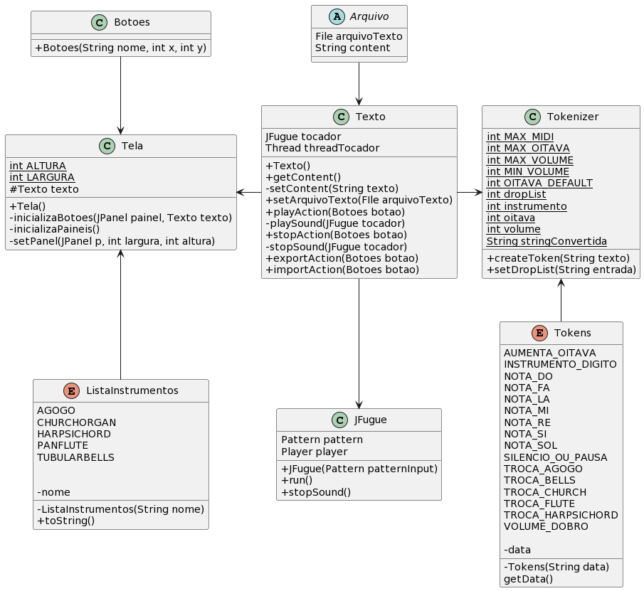
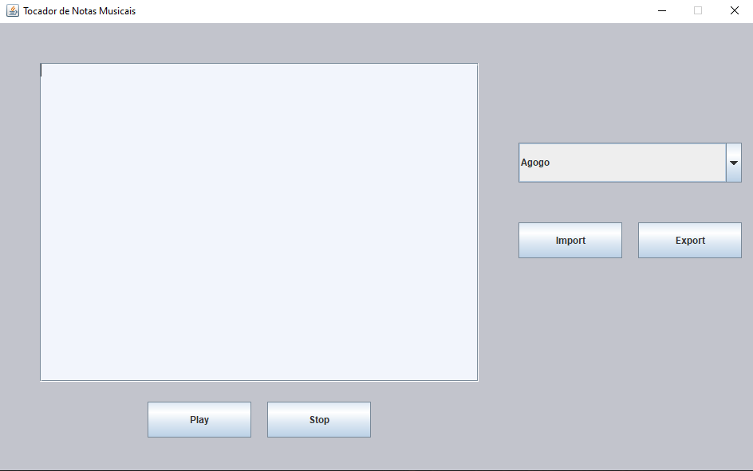
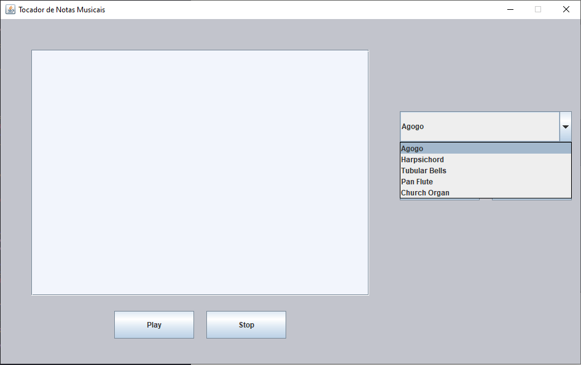
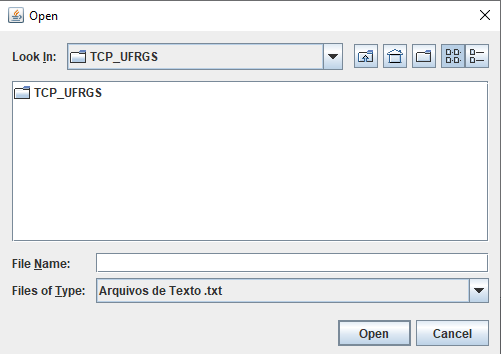
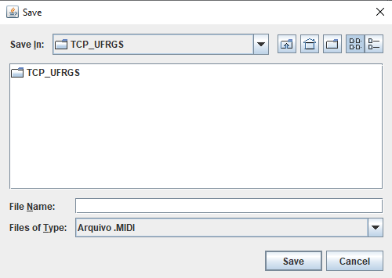

class: center, middle # Técnicas de Construção de Programas ### Trabalho Final - Sintetizador de String Alunos: Andrei R. Bereta, Felipe S. Bertoglio, Kathleen L. F. Hoff, Matheus de M. Costa 2022/1 --- # Sumário 1. Requisitos 2. Projeto 3. Implementação 4. Verificação e Validação 5. Evolução --- # Requisitos Iniciais A fim de concluir os estudos sobre Técnicas de Construção do Programas, os professores propuseram um trabalho que previa a definição, implementação, teste e depuração de um gerador de músicas a partir de texto. O software deve gerar uma série de notas correspondentes ao texto inserido, que também possui uma série de comandos para alteração de parâmetros. Os requisitos necessários para a conclusão do projeto eram: - Escolha e desenvolvimento de alguma linguagem de programação orientada a objeto; - Entrada de texto via campo de digitação na interface no software; - Tradução do texto em som; - Possibilidade de exportação de um arquivo MIDI; [reposicionar] - Seguir os seguintes parâmetros: --- <br> <br> <br> <img src="requisitos iniciais.png" width="100%"> --- # Projeto Escolhemos utilizar a linguagem Java aliada às seguintes bibliotecas: - JFugue: Capaz de traduzir strings em sons; - Componentes de javax.swing: Usadas para criação da tela criada para o usuário. Exemplo: javax.swing.JTextArea, utilizada para a criação da caixa de texto. As funcionalidades que foram planejadas inicialmente para o software foram: - Tradução de textos (tipo string) em som; - Possibilidade de dar play e stop no som; - Mudança de instrumento base, através da seleção de um instrumento no menu; - Mudança na frequência de batidas. --- O protótipo da Tela de visualização proposto foi: <img src="tela.jpg" width="70%" class="center"> --- Também foi desenvolvido o seguinte diagrama de classes: <img src="uml-antiga.png" width="60%" class="center"> --- # Implementação Ao longo da implementação, o projeto sofreu uma serie de mudanças: - Foram introduzidas mudanças na lista de requisitos; - Houve um amadurecimento na capacidade de utilização das bibliotecas; - Foram localizados erros de projeto iniciais. Assim, foram realizadas as adaptações necessárias na fase de implementação: --- Os requisitos foram alterados em novo enunciado do trabalho, passando a compreender: <img src="requisitos.png" width="60%" class="center"> Portanto a lista de funcionalidades implementadas passou a ser: - Tradução de textos (tipo string) em som; - Possibilidade de dar play e stop no som; - Mudança na frequência de batidas; - Importar arquivos com a extensão .txt que contenham um texto a ser traduzido; - Exportar o som, salvando-o em um arquivo MIDI na biblioteca selecionada pelo usuário com nome customizável; - Mudança de instrumento base, através da seleção de um instrumento no menu e através de caracteres específicos. --- No início do projeto, não tinhamos compreendido totalmente como a biblioteca JFugue funcionava. Logo, durante a implementação o diagrama de classes sofreu alterações e ficou da seguinte forma:  Como podemos observar, comparando a imagem anterior com a UML final, mudamos alguns atributos, métodos e classes. --- Assim, chegamos ao estado final de implementação do software conforme requisitos estipulados: Interface inicial:   --- Interface de importação de arquivo:  Interface de exportação de arquivo:  --- # Verificação e Validação A verificação do software foi realizada através de testes de uso realizados entre os membros do grupo ao longo da implementação das funcionalidades e das mudanças realizadas. Embora não seja a forma mais eficiente de testagem, foi entendido que devido à complexidade da aplicação e a facilidade de realização de testes manuais, a esta forma seria a mais adequada. A partir dos testes foram realizadas depurações do código para a solução de problemas localizados. Também, embora não tenhamos um parâmetro formal de validação, ao comparar a experiência de uso, as funcionalidades implementadas e a familiaridade da interface, acreditamos que o usuário terá uma experiência satisfatória e agradável ao utilizar o programa. --- # Evolução Modificações futuras dependeriam das novas necessidades do usuário|cliente. Porém, acreditamos que os requisitos propostos pelo professor foram devidamente seguidos e a aplicação foi desenvolvida buscando garantir uma boa qualidade de software.